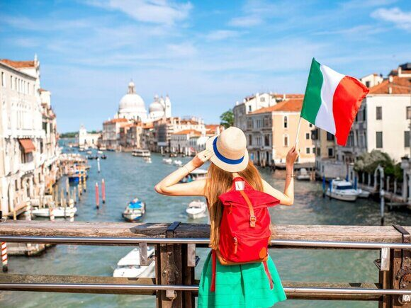

« НазадПланируете поездку в Италию? Узнайте о необходимых документах Италия — это удивительная страна, обладающая богатейшей историей, великолепной архитектурой и уникальной культурой, которая привлекает миллионы туристов со всего мира. Каждый год люди стремятся посетить ее знаменитые города, такие как Рим, Венеция, Флоренция и Милан, где можно насладиться не только искусством и архитектурой, но и вкусной кухней, местными традициями и живописными пейзажами. Однако, прежде чем отправиться в это незабываемое путешествие, важно разобраться в вопросах, касающихся заграничного паспорта и визовых требований. Для поездки в Италию гражданам России, необходим заграничный паспорт, который должен быть действителен не менее трех месяцев после предполагаемой даты выезда из страны. Кроме того, в паспорте должно быть как минимум две пустые страницы для визы и отметок пограничников. Что касается визовых формальностей, то для посещения Италии россиянам требуется шенгенская виза. Процесс получения визы включает несколько этапов. Сначала нужно собрать необходимые документы, среди которых: заполненная анкета, фотография, медицинская страховка, подтверждение финансовой состоятельности, а также бронь гостиницы или приглашение от итальянской стороны. Затем необходимо записаться на прием в консульство или визовый центр, где будет проведена сдача дактилоскопии и сданы документы. Важно помнить, что срок рассмотрения визовой заявки может занять от нескольких дней до двух недель, поэтому стоит планировать поездку заранее. Кроме того, в зависимости от цели поездки (туризм, работа, учеба) могут потребоваться дополнительные документы. Теперь давайте рассмотрим подробнее все этим моменты. Какой тип загранпаспорта выбратьПри планировании поездки в Италию важно заранее определиться с типом заграничного паспорта, который вам потребуется для поездки. В настоящее время существуют два типа заграничных паспортов: старого образца и биометрический. Каждый из них имеет свои особенности и ограничения, которые стоит учитывать. Старый образец паспортаСтарый образец заграничного паспорта представляет собой книжечку, состоящую из 36 страниц. Такой паспорт не содержит встроенного электронного чипа, что делает его менее защищенным и более уязвимым для неправомерных действий. Одним из главных недостатков старого паспорта является то, что он не всегда подходит для поездок в страны Шенгенской зоны. Это значит, что если у вас есть только такой паспорт, вам придется в некоторых случаях пройти процедуру получения нового — биометрического паспорта, чтобы избежать проблем с пересечением границы. Биометрический паспортБиометрический паспорт — это современный документ, который включает в себя электронный чип с биометрическими данными владельца, такими как отпечатки пальцев и фотография. Этот тип паспорта обеспечивает высокий уровень безопасности и значительно упрощает процесс пересечения границы. Благодаря наличию чипа, биометрический паспорт позволяет использовать автоматизированные системы контроля на границах, что сокращает время ожидания в очередях. Кроме того, для поездки в Италию и другие страны Шенгенской зоны наличие биометрического паспорта часто является обязательным условием. Важно отметить, что биометрические паспорта также имеют срок действия, который сейчас составляет 10 лет для взрослых и также 10 лет для детей. Поэтому, если ваш паспорт близок к истечению, стоит задуматься о его обновлении. При оформлении биометрического паспорта необходимо предоставить ряд документов, включая фотографии, свидетельство о рождении (для детей) и справку по форме № 9 о месте жительства. Принимая решение о том, какой тип паспорта выбрать, учитывайте не только свои планы на поездку, но и возможные будущие путешествия. Если вы планируете посещение других стран Шенгенской зоны, то биометрический паспорт станет более удобным вариантом для вас. Кроме того, в некоторых случаях наличие биометрического паспорта может облегчить процесс получения виз в другие страны, если это потребуется. Таким образом, для комфортного и беспроблемного путешествия в Италию рекомендуется оформлять именно биометрический паспорт. Он не только соответствует современным требованиям безопасности, но и значительно упрощает процесс пересечения границы и позволяет вам сосредоточиться на наслаждении своей поездкой. Как оформить загранпаспортОформление заграничного паспорта — это важный и ответственный процесс, который может показаться сложным на первый взгляд. Однако, следуя четким шагам и подготовив все необходимые документы, вы сможете легко и быстро получить свой паспорт. Давайте рассмотрим этот процесс более подробно и добавим некоторые важные нюансы. 1. Сбор необходимых документов
2. Запись на прием 3. Подача документов 4. Ожидание готовности паспорта 5. Получение паспорта Визовые требования для въезда в ИталиюДля граждан России, планирующих поездку в Италию, важно знать о визовых требованиях. Италия входит в Шенгенскую зону, поэтому для въезда в страну необходимо получить шенгенскую визу. Виза в ИталиюДля поездки в Италию гражданам России необходимо получить шенгенскую визу. Шенгенская зона включает в себя 26 стран Европы, и для туристических поездок чаще всего используется краткосрочная виза типа C. Эта виза позволяет находиться в Шенгенской зоне до 90 дней в течение 180-дневного периода, что делает её удобной для краткосрочных поездок, включая туризм, деловые поездки и посещение родственников. Процедура получения шенгенской визы1. Сбор документовПервым шагом на пути к получению визы является сбор необходимых документов. Вам понадобятся:
2. Запись на прием в консульствоПосле сбора всех необходимых документов следует записаться на прием в консульство или визовый центр Италии. Это можно сделать онлайн, через сайт консульства или по телефону. Важно выбрать удобное время, так как записи могут быть ограничены. 3. Подача документовВ назначенный день вам нужно прийти в консульство или визовый центр с собранными документами. При подаче документов может потребоваться предоставить биометрические данные, такие как отпечатки пальцев. Это делается для повышения уровня безопасности и предотвращения мошенничества. 4. Ожидание решенияПосле подачи документов начинается процесс рассмотрения вашей заявки. Обычно он занимает от 5 до 15 рабочих дней, но в некоторых случаях может затянуться. Рекомендуется подавать документы заранее, чтобы избежать неприятных ситуаций, если вам нужно будет изменить планы. 5. Получение визыПосле одобрения вашей визы вы получите уведомление о том, что паспорт готов. Вам нужно будет забрать его в консульстве или визовом центре. Обратите внимание на то, что виза может быть выдана на срок, меньший, чем вы запрашивали, поэтому важно заранее знать, сколько времени вам нужно. Дополнительные советы
Получение визы может показаться сложным процессом, но при правильном подходе и тщательной подготовке он станет значительно проще. Что может стать причиной отказа во въездеОтказ во въезде в Италию, даже если у вас есть виза и заграничный паспорт, может произойти по нескольким причинам, которые важно учитывать перед поездкой. Во-первых, одной из самых распространенных причин является недостаток финансовых средств. Визовый офицер может потребовать от вас предоставить доказательства того, что у вас достаточно денег для проживания в стране на весь период пребывания. Это может быть выписка из банка, наличные деньги или кредитные карты. Обычно рекомендуется иметь при себе сумму, достаточную для покрытия расходов на жилье, питание и транспорт, а также дополнительные средства на случай непредвиденных обстоятельств. Во-вторых, неправильные или недействительные документы могут стать причиной отказа. Убедитесь, что все ваши документы в порядке: проверьте, чтобы паспорт был действителен не менее шести месяцев с момента въезда, а виза соответствовала цели вашей поездки. Также важно иметь при себе все необходимые документы, такие как подтверждение бронирования отеля, обратный билет и страховку. Третья причина – это нарушение визового режима в прошлом. Если вы ранее имели проблемы с пребыванием в Шенгенской зоне, такие как превышение срока действия визы или нелегальное пребывание, это может негативно сказаться на вашем текущем путешествии. Пограничники могут проверить вашу историю поездок и, если обнаружат нарушения, могут отказать во въезде. Кроме того, подозрения в намерении остаться нелегально также могут стать основанием для отказа. Если пограничники заподозрят, что вы планируете остаться в стране без разрешения, например, если у вас нет четкого плана возвращения или если вы не можете объяснить цель своей поездки, это может вызвать вопросы. Постарайтесь быть готовым ответить на вопросы о своих планах и предоставить все необходимые документы, подтверждающие вашу цель визита. Также стоит отметить, что наличие визы не гарантирует автоматический въезд. Пограничники имеют право принимать решение на месте, основываясь на своей оценке ситуации. Поэтому важно заранее подготовиться, чтобы снизить риск отказа и сделать ваше путешествие в Италию максимально комфортным и безопасным. Процедура въезда в ИталиюПри въезде в Италию вам предстоит пройти контроль на границе, что является стандартной процедурой для всех путешественников. Важно заранее подготовить все необходимые документы, чтобы избежать задержек и неудобств. Вам потребуется заграничный паспорт, который должен быть действителен в течение как минимум трех месяцев после даты выезда из страны. Кроме паспорта и визы, не забудьте взять с собой подтверждение бронирования отеля или другого места проживания. Это может быть распечатка или электронный документ, который подтверждает, что у вас есть место для ночлега. Также полезно иметь при себе финансовые документы, такие как выписки из банка или наличные деньги, чтобы продемонстрировать, что у вас достаточно средств для проживания в стране. На границе пограничники могут задать вам вопросы о цели вашей поездки, будь то туризм, бизнес или учеба. Они также могут уточнить сроки вашего пребывания в Италии и места, которые вы планируете посетить. Будьте готовы ответить на эти вопросы четко и уверенно. Если у вас есть планы на экскурсии или встречи, не забудьте упомянуть об этом, так как это может помочь подтвердить вашу цель визита. Кроме того, стоит помнить, что в Италии существуют определенные правила и ограничения, касающиеся ввоза товаров, особенно продуктов питания и алкогольных напитков. Убедитесь, что вы знакомы с этими правилами, чтобы избежать неприятностей на границе. В целом, если вы подготовите все документы и будете готовы к вопросам, процесс въезда в Италию пройдет гладко и без лишних проблем. Например в Милане с 2025 года ввели практически полный запрет на курение на открытом воздухе. Курильщики обязаны держаться на расстоянии не менее 10 метров от других людей на улице. Нарушителям грозят штрафы в размере от €40 до €240 Возможные проблемы при поездкеПри планировании поездки в Италию, даже при самом тщательном подходе, могут возникнуть различные проблемы, которые стоит учитывать заранее. Давайте рассмотрим наиболее распространенные из них и добавим несколько полезных советов. Во-первых, проблемы с документами. Это одна из самых распространенных ситуаций, с которой могут столкнуться путешественники. Убедитесь, что у вас есть все необходимые документы: паспорт, виза (действующая), медицинская страховка и документы, подтверждающие бронирование отелей и билетов. Если возникнут какие-либо проблемы с визой или паспортом, не откладывайте обращение в консульство или визовый центр. Лучше всего иметь копии всех важных документов на случай их утери. Во-вторых, задержки на границе. Пограничный контроль может занять больше времени, чем вы ожидали, особенно в пиковые сезоны. Рекомендуется заранее предусмотреть время на этот процесс, особенно если у вас стыковочные рейсы. Если вы путешествуете на поезде, учтите, что некоторые маршруты могут быть перегружены, и стоит заранее проверить расписание. Третья проблема — это здоровье. Не забывайте о медицинской страховке, поскольку в случае необходимости вам может понадобиться медицинская помощь. Перед поездкой стоит также ознакомиться с местными медицинскими учреждениями и правилами, связанными с оказанием медицинских услуг для иностранцев. Наличие аптечки с основными медикаментами может значительно упростить вашу поездку. Четвертая проблема связана с языковым барьером. Если вы не говорите на итальянском или английском, это может вызвать трудности в общении с местными жителями. Рекомендуется иметь при себе разговорник или использовать мобильные приложения для перевода, такие как Google Translate. Также полезно выучить несколько базовых фраз на итальянском, что поможет вам наладить контакт с местными жителями и сделать вашу поездку более приятной. Кроме того, стоит учитывать возможные проблемы с транспортом. В Италии общественный транспорт может быть переполнен, особенно в туристических местах. Рекомендуется заранее изучить маршруты и расписания, а также иметь запасной план на случай, если ваш транспорт задержится. Также обратите внимание на местную кухню. Хотя итальянская еда известна своей вкусностью, и громадными порциями, не все рестораны могут соответствовать вашим ожиданиям. Рекомендуется заранее ознакомиться с отзывами о местах, которые вы планируете посетить, чтобы избежать разочарований. РекомендацииЧтобы ваша поездка в Италию прошла гладко и без проблем, важно заранее подготовиться и учесть множество нюансов. Вот несколько рекомендаций, которые помогут вам сделать вашу поездку более комфортной и безопасной. 1. Заблаговременно оформляйте документы 2. Проверяйте актуальность документов 3. Сохраняйте копии документов 4. Изучите информацию о стране 5. Планируйте бюджет 6. Изучите местный язык 7. Заботьтесь о здоровье 8. Подготовьте список мест для посещения Следуя этим рекомендациям, вы сможете избежать многих распространенных ошибок и сделать свою поездку в Италию максимально комфортной и запоминающейся. ЗаключениеПоездка в Италию — это захватывающее приключение, которое требует тщательной подготовки. Правильный заграничный паспорт и виза являются ключевыми элементами успешного путешествия. Следуя приведенным рекомендациям и внимательно изучив все аспекты, связанные с оформлением документов, вы сможете насладиться своим пребыванием в этой прекрасной стране без лишних забот. Не забывайте о том, что подготовка — это залог успешного и приятного путешествия! Срочное оформление загранпаспорта для вашей поездки в Италию!Мечтаете о романтической поездке в Италию, но сроки поджимают? Паспортно-визовый центр «Север» поможет вам получить загранпаспорт в кратчайшие сроки! Мы работаем уже более 20 лет и специализируемся на быстром и качественном оформлении документов. Почему стоит выбрать нас?
Что мы предлагаем:
Не откладывайте свою мечту! Звоните нам прямо сейчас по телефону +79255854195 и получите бесплатную консультацию. Наши специалисты ответят на все ваши вопросы и помогут определиться с оптимальным вариантом оформления загранпаспорта для вашей поездки в Италию. Паспортно-визовый центр «Север» - ваше надежное решение для быстрой и качественной подготовки к путешествию! |
Комментарии
Комментариев пока нет